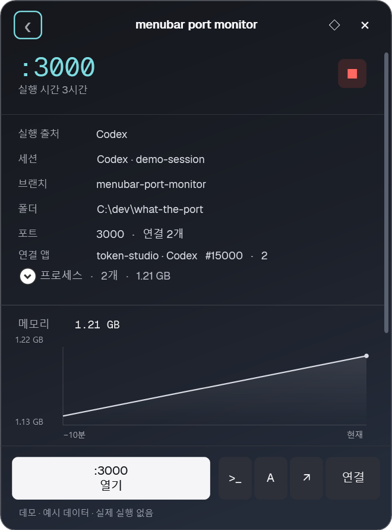
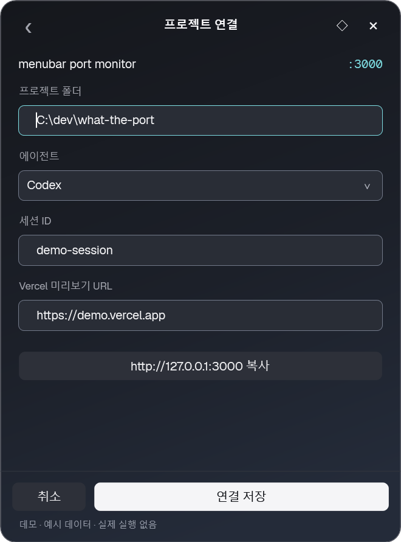
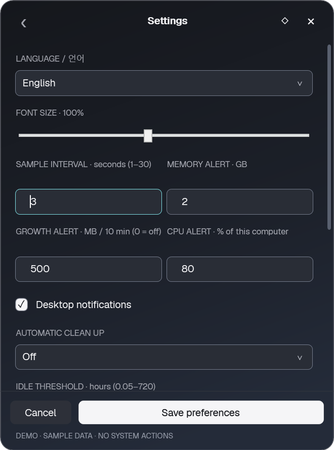
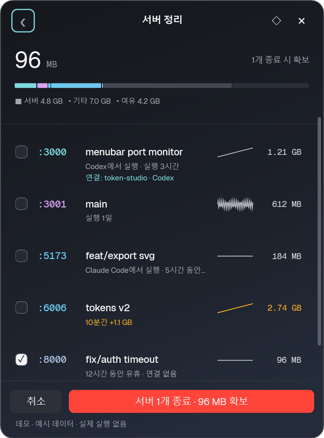

사용 가이드
Windows 10/11 x64 · .NET Framework 4.8
실행
- WhatThePort.exe를 받아 실행합니다.
설치는 필요 없습니다. - 개발 서버를 실행하고 트레이 아이콘을 누릅니다.
- 업데이트할 때는 기존 앱의 트레이 메뉴에서 앱 종료를 누른 뒤 새 EXE를 실행합니다.
라이선스 확인
단일 EXE에 MIT·폰트 라이선스가 포함되어 있습니다.
.\WhatThePort.exe --licenses창 조작
- Ctrl+Alt+P 또는 트레이 아이콘: 창 표시·숨김.
- ×: 트레이로 숨김.
감시까지 끝내려면 트레이 메뉴의 앱 종료를 선택합니다. - 창 가장자리·모서리 드래그: 창 크기 조절.
글꼴 크기는 설정에서 80–125%로 별도 조절합니다. - ◇ / ◆: 다른 앱을 선택해도 패널 유지.
위치는 제목을 드래그해 바꿉니다.
화면·그래프 갱신은 애니메이션 없이 즉시 반영합니다.
글꼴 비율은 선택 즉시 미리 보며 저장하면 유지하고 취소하면 복원합니다.
작은 창과 큰 창


서버 확인
목록에서 서버를 선택하면 폴더·브랜치·연결 앱과 최근 10분의 메모리·CPU 그래프가 나옵니다.
프로세스를 펼치면 하위 프로세스도 확인할 수 있습니다.


하단에서 로컬 페이지를 열거나 프로젝트 폴더의 터미널을 실행합니다.
그래프를 키보드로 선택하면 좌우 방향키로 측정값을 읽습니다.
프로젝트 연결
상세 하단의 연결에서 에이전트·세션 ID·Vercel 미리보기 URL을 저장합니다.
세션·미리보기가 등록되면 해당 실행 버튼이 나타납니다.
로컬 URL 복사도 이 화면에 있습니다.


세션 재개에는 Codex 또는 Claude Code의 설치·로그인이 필요합니다.
미리보기에는 해당 프로젝트의 HTTPS URL을 입력합니다.
설정
언어·조회 간격·자원 경고·자동 정리·터미널·배경 불투명도·로그인 시 시작을 바꾸고 설정 저장을 누릅니다.
취소하면 미리보기를 되돌립니다.


알림 1시간 쉬기는 다시 누르면 해제됩니다.
중지 중에는 재개 버튼에 만료 시각이 표시됩니다.
트레이 메뉴에서도 전환할 수 있습니다.
기본값과 자동 정리
조회 3초 · 메모리 2GB · 10분간 증가 500MB · CPU 80% · 유휴 4시간.
자동 정리는 기본 꺼짐이며, 확인 후 정리 또는 자동 모드를 선택할 수 있습니다.
보호되거나 경고 중인 서버는 자동 종료하지 않습니다.
영어 화면


서버 정리
- 서버 정리를 누릅니다.
- 대상을 확인하고 체크합니다.
보호 항목은 선택할 수 없습니다. - 선택 개수·예상 회수량을 확인한 뒤 종료 버튼을 누릅니다.
종료는 선택한 프로세스 트리에 즉시 적용됩니다.
저장되지 않은 작업은 유실될 수 있으며 서버의 종료 훅은 보장하지 않습니다.



단축키
| 키 | 동작 |
|---|---|
| Ctrl+Alt+P | 창 표시·숨김 |
| Esc | 이전 화면 / 목록에서 숨김 |
| Ctrl+, | 설정 |
| Ctrl+Shift+방향키 | 창 이동 |
| ↑ / ↓ / Enter | 목록 선택 / 상세 열기 |
| C | 서버 정리 |
| O / T / A / V | 로컬 페이지 / 터미널 / 연결된 세션 / 미리보기 |
터미널 조회
CLI 포함 ZIP을 폴더째 풀고 PowerShell에서 실행합니다.
EXE·DLL·폰트 파일을 분리하지 마세요.
.\wtp.exe list
.\wtp.exe list --json
.\wtp.exe list --all
.\wtp.exe --help문제 해결
Windows·브라우저에서 다운로드를 경고해요
현재는 코드 서명이 없는 시험 빌드입니다.
공식 다운로드 주소와 SHA-256을 확인하고 검사 기록을 참고하세요.
서명·백신 검사·다운로드 평판은 서로 다른 항목입니다.
백신에서 탐지했어요
보호를 끄거나 예외를 추가하지 말고 탐지명·파일 해시를 확인하세요.
1.1.0의 IObit 시작프로그램 탐지 보고가 있으며 제조사 판정은 확인되지 않았습니다.
새 버전의 파일 검사 결과가 기존 탐지의 오탐을 확정하지는 않습니다.
서버가 안 보여요
기본 조회 범위는 동일 사용자·로그인 세션의 Windows 네이티브 TCP 포트 1024–65535입니다.
설정에서 다른 로컬 앱 포함을 선택할 수 있습니다.
UDP·WSL·Docker 내부 자원은 지원하지 않습니다.
설정과 연결 정보는 어디에 저장돼요?
%LOCALAPPDATA%\WhatThePort의 로컬 JSON입니다.
앱 자체의 외부 네트워크 요청·텔레메트리·자동 업데이트는 없습니다.